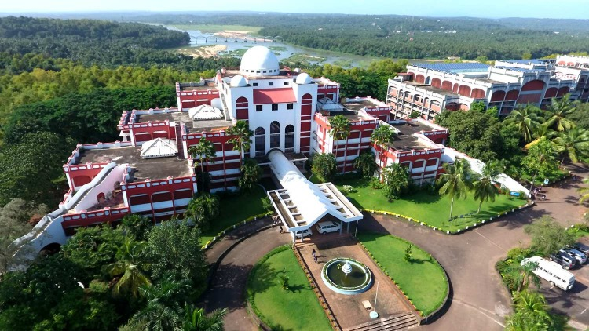

ABOUT MESCE
The first Engineering College established under the self financing sector in Kerala is situated on the beautiful and serene banks of Nila or Bharathapuzha.
It was established as an institution with minority status in 1994. Widely acknowledged as one of the premier institutions imparting technical education in the state,
the college offers admission to all categories of students with special consideration to educationally backward communities.
